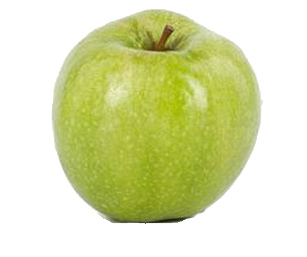

Ренат Симиренка
Ренет Симиренка (в побуті часто використовують назву просто Симиренка або Семеренка) — зимовий сорт яблуні домашньої невідомого походження. Описаний і введений в каталог в 1880 році видатним українським помологом Левком Платоновичем Симиренком.
Дерево сильноросле, вище середніх розмірів, з широкоокруглою розлогою, найчастіше казаноподібною, густою кроною. Кора штамба і гілок темно-сіра з коричневим, на сонячній стороні — з помаранчевим відтінком. Міцні нижні скелетні гілки відходять від стовбура під кутом 55—70°, верхні — майже під прямим. Пробуджуваність бруньок вища за середню, пагоноутворювальна здатність висока. Тип плодоношення — змішаний. Плодоношення в південних садах нерідко виражено на тогорічних приростах.
Плоди середнього або вище середнього і навіть великого розміру, за формою від сплощеної округло-конічної до плоско-округлої, де асиметричні; поверхня рівна, гладка. Основне забарвлення при зніманні світло-зелене або яскраво-зелене, з білуватою мінливістю і численними світлими округлими великими підшкірними крапками. Особливою ознакою сорту є наявність бородавчастих утворень до 7 мм в діаметрі з оржавленістю по поверхні, іноді до 2-3 на одному плоді. У південних садах для сорту характерна наявність тьмяно-малинового на сонячному боці рум'янцю, особливо при пізньому зніманні. Звичайний термін знімання плодів — кінець вересня — початок жовтня. Плоди добре утримуються до знімання. Тривалість зберігання — до червня, а для садів із залуженням — і більше, смак плодів гармонійно насичений. Товарність плодів — залежно від агродогляду — 90%.
Хімічний склад плодів:
- цукор(7,5 - 12,0%)
- титриємі кислоти(0,4 - 0,7%)